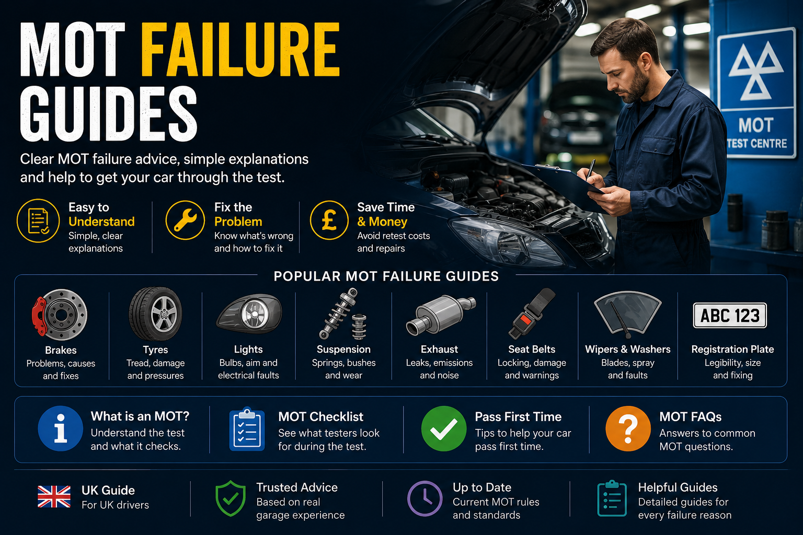

Common MOT Failure Reasons UK
The main guide covering tyres, brakes, lights, suspension, rust, emissions and warning lights.
Read guide →This is the main MOT hub for UK drivers. It brings together common MOT failure reasons, retest rules, advisories, warning lights, tyres, brakes, suspension, emissions, rust, legal driving rules and simple pre-MOT checks.

Many MOT failures are avoidable. Tyres, lights, wipers, washers, warning lights, number plates and obvious leaks should be checked before test day.
Browse MOT failure guides for tyres, brakes, lights, suspension, rust, emissions, warning lights, retest rules, advisories, insurance concerns, police checks and used-car MOT history.
Start here if your car has failed its MOT or you want to understand the most common reasons UK vehicles fail.
The main guide covering tyres, brakes, lights, suspension, rust, emissions and warning lights.
Read guide →Major defects, dangerous defects, repairs, retests and whether you can drive after failure.
Read guide →Retest time limits, partial retests, repair choices and what happens after a failed MOT.
Read guide →What MOT advisories mean and why ignored advisories often become future MOT failures.
Read guide →Simple checks before MOT day to avoid easy failures and unnecessary repair bills.
Read guide →What failed MOT history can reveal when buying a used car in the UK.
Read guide →Complete used car buying hub covering inspections, MOT history checks, service history, test drives, advisories, scam warnings, reliability advice and first car buying guides.
Open hub →These guides explain the legal side of MOT problems, including driving after failure, expired MOT fines, ANPR checks, insurance questions, SORN and road parking.
When driving after an MOT failure may be allowed and when it is unsafe or illegal.
Read guide →Fines, police checks, insurance concerns and legal exceptions for expired MOT.
Read guide →How police and ANPR systems can detect vehicles without a valid MOT.
Read guide →Vehicle tax, MOT expiry and what you need before taxing a car.
Read guide →MOT appointment journeys, tax rules and legal exceptions.
Read guide →How MOT status can affect insurance, claims and road use.
Read guide →Rules for leaving a no-MOT vehicle on a public road.
Read guide →Selling a vehicle without MOT and what buyers should know.
Read guide →SORN insurance rules, off-road storage and returning a car to the road.
Read guide →Some warning lights can fail an MOT because they relate to braking, safety, airbags, stability control, tyre pressure or emissions.
When the engine light affects emissions and MOT results.
Read guide →A broader UK guide to dashboard warning symbols and what to check first.
Read guide →Browse dashboard warning light meanings and safety advice.
Open hub →ABS warning light MOT rules and braking safety concerns.
Read guide →Airbag and SRS warning light MOT rules explained.
Read guide →TPMS warning light rules for modern vehicles.
Read guide →Tyres are one of the biggest MOT failure categories because tread depth, tyre damage and sidewall condition directly affect road safety.
Tyre tread, sidewall damage, mismatched tyres and MOT tyre rules explained.
Read guide →Minimum legal tyre tread depth and MOT risk explained.
Read guide →Bald tyre risks, MOT failure and legal tread limits explained.
Read guide →Tyre sidewall bulges, damage and dangerous defects explained.
Read guide →Wheel bearing noise, play and MOT failures explained.
Read guide →Steering pull, uneven tyre wear and alignment issues explained.
Read guide →Brake performance is one of the most important parts of the MOT test. Weak brakes, imbalance, leaks and warning lights can all fail.
Brake pads, discs, brake fluid, handbrake and brake imbalance failures explained.
Read guide →Brake pad wear limits and MOT inspection rules explained.
Read guide →Brake fluid leaks and braking performance failures explained.
Read guide →Parking brake efficiency and handbrake MOT failures explained.
Read guide →Grinding brake noises, worn pads and urgent repair signs explained.
Read guide →Early brake symptoms that should be checked before MOT day.
Read guide →Suspension and steering faults can fail MOT tests because they affect handling, braking stability and vehicle control.
Broken springs, leaking shocks, worn bushes, joints and suspension repairs explained.
Read guide →Suspension safety, wear and MOT inspection rules explained.
Read guide →Broken, cracked or incorrectly seated springs explained.
Read guide →Leaking shock absorbers and damping faults explained.
Read guide →Ball joint play, worn boots and steering safety explained.
Read guide →Lower arm, bush and ball joint MOT failures explained.
Read guide →Emissions failures can involve engine warning lights, diesel smoke, DPF faults, catalytic converters, sensors, misfires and exhaust leaks.
Petrol and diesel emissions failures, warning lights, DPF and catalyst faults explained.
Read guide →DPF regeneration, blocked filters and diesel warning signs explained.
Read guide →Black, blue and white smoke causes explained.
Read guide →Exhaust leak safety, noise and emissions issues explained.
Read guide →Loose exhaust mounts, insecure systems and MOT checks explained.
Read guide →Engine light causes, diagnostics and emissions-related MOT risks.
Read guide →Rust, damaged mirrors, wipers, washers, seatbelts, doors, number plates and visibility issues can all affect MOT results.
Corrosion, welding, sills, chassis, brake pipes and structural rust explained.
Read guide →Surface rust vs structural rust and prescribed areas explained.
Read guide →Seatbelt condition, mounting points and warning concerns explained.
Read guide →Wiper blades, visibility and windscreen clearing rules explained.
Read guide →Windscreen damage zones, visibility and MOT failure risks.
Read guide →Number plate condition, spacing, readability and lights explained.
Read guide →A car’s MOT history can reveal repeated advisories, hidden rust, mileage concerns, neglected maintenance and expensive future repairs.
Check mileage records, advisories, failures and patterns before buying.
Read guide →Practical checks for tyres, leaks, warning lights, bodywork and paperwork.
Read guide →When failed MOT history matters and what repeated failures can reveal.
Read guide →Which MOT advisories are minor and which can become expensive.
Read guide →What to check during a used car test drive before buying.
Read guide →Useful seller questions before paying for a used vehicle.
Read guide →A few quick checks before MOT day can prevent easy failures and give you time to fix problems before the test.
Headlights, brake lights, indicators, hazards, fog lights and number plate lights.
Inspect tread depth, sidewalls, bulges, cracks, pressure and uneven wear.
Make sure the windscreen clears properly and washer fluid sprays correctly.
ABS, airbag, brake, engine, TPMS and ESC lights can affect MOT results.
Knocking, grinding, scraping and humming can point to MOT-related defects.
Previous advisories are often the best clue for this year’s likely failure.
Use these links to move around the full MOT topic cluster quickly. This helps connect the MOT legal, failure, retest and repair guides together.
Motor Vehicle Expert publishes practical UK MOT advice, diagnostics and repair guidance designed to help drivers understand failures, warning lights, repair decisions and vehicle safety checks.